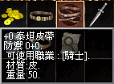
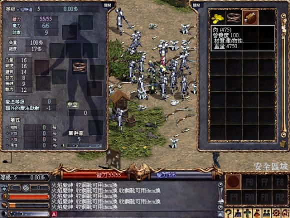

|
2003年3月23日
泰坦皮帶載重測試

在香港的亞丁城測試伺服器中有提供泰坦皮帶，究竟它的實際效用如何呢？
20力14體騎士：總載重量2700 -> 4800
16力14體騎士：總載重量2400 -> 4800
註：不論角色能力值如何，4800是目前的載重最大值
由於連載重量只有2400的角色在穿了泰坦皮帶後，總載重量亦直升4800的載重量最大值，因此可見泰坦皮帶會最少增加載重上限100%！由於只有騎士可以使用泰坦皮帶，而騎士的載重量最少都有2400，因此不論你是甚麼素質的角色，在穿了泰坦皮帶後一概會有4800總載重量。
另外在香港測試伺服器中穿了泰坦皮帶是不會減慢攻擊或行走速度，但據我們得知在美國正式伺服器泰坦皮帶確實會減慢減度，因此相信在將來泰坦皮帶仍是會減慢速度的。

古代金屬盔甲回血量測試
最近Minimomi's Lineage作了一個古代金屬盔甲的測試，他們發覺在穿著此盔甲後體力回復量會多1，那麼香港伺服器會否相同呢？因此我們作了以下測試：
鳴謝香港太陽神的終極天皇借出古老的金屬盔甲（古代金屬盔甲）作為測試之用。
18體質的騎士回血量為1-6，在穿著盔甲後回血量為2-7，而回血間隔則沒有改變，仍然是約2-3秒回血一次。
因此可見古代金屬盔甲是有體力回復量+1的額外效用，而在亞丁城更新後部分古代防具的體力或魔力回復量會再度加強，那麼屆時的回復量會是怎樣呢？大家拭目以待。（暫時已知在更新後古代皮盔甲魔力回復量約+8，古代長袍魔力回復量約+12，大約是目前的4倍） |